ColorPhage Mineral Family Candidates
这是第二个进阶 family 的候选预览。Mineral 走蓝灰、石板、矿物青、冷砂和少量铁锈锚点路线，目标是临床、方法学、模型比较和机制统计图中的冷静高级感。
advanced family: mineral
candidate count: 3
n = 8
plots rendered by ggplot2
advanced family / mineral
Mineral Slate mineral_slate
石板蓝灰主线：适合临床亚组、方法比较、模型 benchmark。
#26384A#536879#7F95A3#AFC0C8#D7D2C3#B8A27A#A46F5E#6E4F63Fill / bar
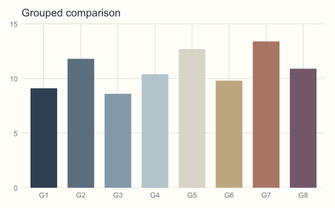
Colour / scatter
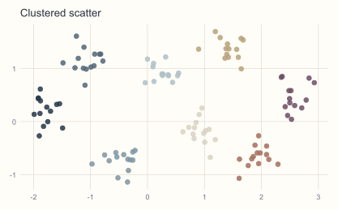
Colour / line
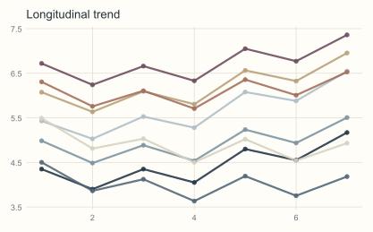
UMAP-like
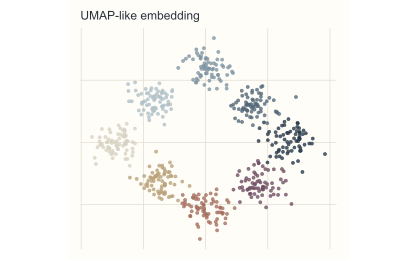
advanced family / mineral
Mineral Quartz mineral_quartz
通透石英层：适合低刺激主文统计图、组学分层和长期阅读场景。
#415A66#6F8790#9EB0B4#D8DED9#C9BEA5#9E8E70#C48B73#7C6B82Fill / bar
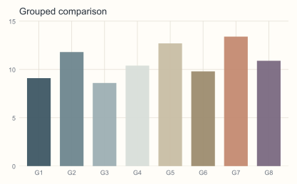
Colour / scatter
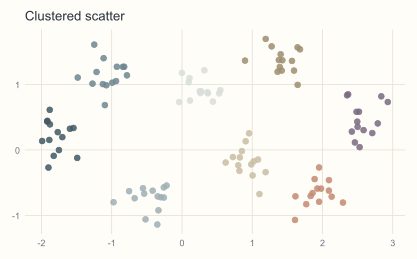
Colour / line
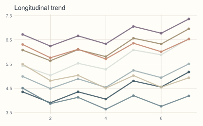
UMAP-like
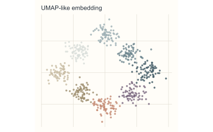
advanced family / mineral
Mineral Oxide mineral_oxide
氧化铁锚点：适合疾病组、干预组、关键模块等需要突出主结果的图。
#2B3F4A#4E6B73#789097#B5C1BE#D4C6A8#B9825D#A9574E#5E4A5DFill / bar
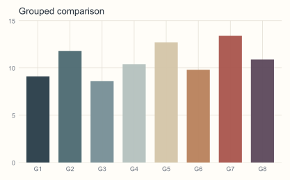
Colour / scatter
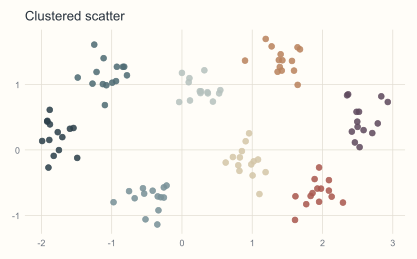
Colour / line
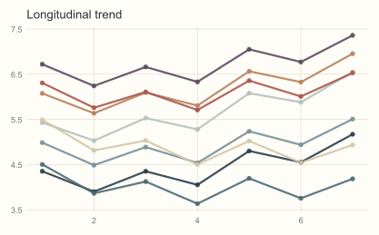